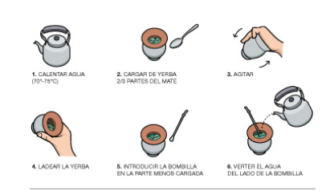

1- Lo primero que tenemos que hacer es poner el agua a calentar hasta que llegue a estar entre los 70° y los 80° y para mantenerla a esa temperatura lo ideal es que la pongamos en un termo. Es importante que el agua no hierva porque puede quemar la yerba y quitarle el sabor, además de quemarnos a nosotros cuando la tomemos.
2- En lo que el agua se calienta tenemos que llenar nuestro mate con nuestra yerba preferida y poner aproximadamente 2/3 del mate
3- Luego pondremos nuestra mano tapando el mate y lo agitamos para sacarle el polvo.
4- Cuando ya le hayamos sacado el polvo ladeamos toda la yerba para un mismo lado y vertemos agua en el hueco, la cual dejaremos reposar 5 minutos.
5- Una vez pasen los minutos con nuestra bombilla empujaremos toda la yerba mojada hacia la que está seca dejando mitad del mate nuevamente con un hueco.
6- Ahí pondremos nuestra bombilla y comenzaremos a cebar, lo ideal es siempre tirar el agua en el mismo lugar para evitar que el mate se lave y con el pasar de las rondas iremos cebando sacando poco a poco parte de la montaña para mantener una cebada extensa con buen sabor.
7- Este punto no es obligatorio, pero cada persona tiene sus gustos y se le puede agregar azúcar o yuyos para conseguir un sabor distinto.
